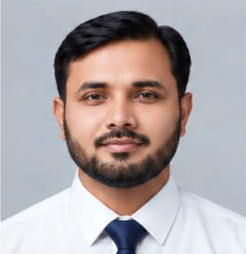

01 / INVENTORY
Inventory & warehouse operations
Stock reconciliation, storage, issue, materials handling and accurate records across stores and warehouses.
I'm Muhammad Naveed. I bring 24 years of Pakistan Air Force service in procurement, inventory control, warehouse operations and technical spares—supported by modern digital reporting.

Stock reconciliation, storage, issue, materials handling and accurate records across stores and warehouses.
Logistics support for aircraft and electronic spares, POL products and textile stores.
ALMS reporting, supply-team supervision and dashboard-based visibility using Python and Streamlit.
An interactive demo exploring inventory and material status, dispatch or fleet activity, stock alerts and operational KPIs. Built to demonstrate logistics reporting and decision-support concepts.
Pakistan Air Force
1999 – March 2023
Logistics & Supply Chain · Retired March 2023
Basic & Advanced Logistics
School of Logistics, PAF Kohat
1999–2000
Basic Logistics & ALMS Refresher, 2010
ALMS Enterprise Version Course, 2013–2014
Python course · GIS course
JCO Trade Portion Course, 2020
Military Leadership & Command, 2020
Seeking logistics, inventory, stores, procurement and supply chain roles.
Location preference: Lahore, Sheikhupura, Gujranwala & Sialkot.